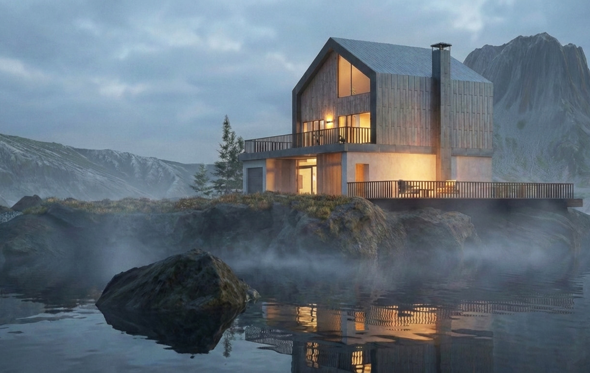

Celou architekturu jsem modelovala od základní geometrie v Blenderu. Pracovala jsem s jednoduchými objemy a ostrými liniemi, které jsem postupně rozbíjela materiály, světlem a atmosférou. Scénu jsem stavěla podobně jako filmový záběr. Nejvíc času jsem věnovala volumetrické mlze, texturám betonu a nastavení světelných kontrastů, které vedou pohled prostorem. Výsledný render prošel několika iteracemi kompozice i nasvícení, než vzniklo prostředí, které působilo uvěřitelně i bez dalších prvků.
Návrh a 3D vizualizace architektury
Role
3D Artist & Designer
Předmět
3D grafika
Semestr a ročník
ZS 2024/2025, 2. ročník Bc.
Typ
Individuální projekt
Oblast
3D modelování, vizualizace

Výzva
Většina studentských vizualizací stojí na hotových assetech a předpřipravených scénách. Chtěla jsem si projít celý proces od prázdné scény až po finální render bez externích modelů. Navrhovala jsem budovu, která obstojí sama o sobě i bez okolního ruchu města. Dům měl působit těžce a klidně, jako objekt vystupující z mlhy.
Řešení
Výsledek
Vznikla autorská 3D vizualizace propojující architektonický návrh a technický rendering. Projekt mi umožnil pracovat s celým procesem produkce v jednom prostředí — od návrhu formy přes modelaci až po finální atmosféru obrazu. Výsledná scéna stojí na světle, materiálu a prostoru místo efektních objektů v pozadí.